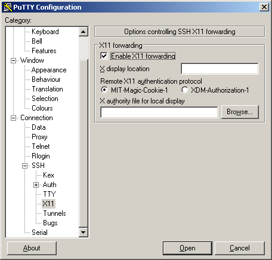

Connect to the cluster¶
An HPC cluster is a big computing infrastructure intended for concurrent usage by many users. A desktop, laptop or even workstations are intended for a single user at a time. In general, Graphical User Interfaces (GUI) consume an important amount of resources even when the user is not making use of them, that is one of the reasons why is common practice in HPC clusters to only allow remote shell access and limited capabilities for GUI applications.
Due to security reasons, HPC clusters are intended to be accessed using a secure shell, the standard secure shell nowadays is called SSH. Secure Shell (SSH) is a cryptographic network protocol for operating network services securely over an unsecured network such as the internet. The typical application of SSH in HPC is to provide remote command-line login and remote command execution.
In order to connect to any of our clusters, you need a username, your name as a user of the cluster. You should have obtained that username with your WVU Login account
WVU’s clusters are also open to users who are currently associated with another Higher Education Institution in the state of West Virginia. These users will still need a WVU Login account for access. If you are working with someone (i.e. a PI) at WVU and need access, please have that person complete the form located here. If you are not working with anyone at WVU, please send an email helpdesk@hpc.wvu.edu For this request to work the requestor must be on the campus network or using WVU’s VPN.
The next step is to use an SSH client to connect to one of our clusters.
Get an SSH Client¶
An SSH Client is a piece of software that allows you to run a remote session on a computer, over a network using a secure connection based on the SSH protocol.
An SSH client is usually come installed on MacOS and most Unix/Linux distributions so if you are using one of those Operating Systems you do not need to install anything.
Windows users will have to acquire an SSH client. PuTTY is a free implementation of SSH for Windows platforms, it comes along with an xterm terminal emulator.
Go to PuTTy to know more about the product or download it directly from PuTTY Download.
PuTTY is not the only SSH client available for Windows. See for example Comparison of SSH clients for several alternatives.
Connecting to WVU’s Clusters via SSH¶
Currently, WVU has two clusters available for access. Depending on which cluster you are using, the instructions for connecting slightly differ.
General SSH Connection Instructions¶
On MacOS and Unix/Linux, open a terminal shell and type:
$> ssh <username>@<hostname>
or:
$> ssh -X <username>@<hostname>
Where <username> is your WVU Login account username and <hostname> is the name of the cluster you wish to connect to.
The -X option is used to forward X windows applications running on the server to be forwarded to your local machine.
Remember that the $> symbols above are there to indicate a command on the terminal, you should not enter those initial characters.
We currently have two clusters Thorny Flat and *Spruce Knob the hostnames are:
Cluster |
Hostname |
Status |
|---|---|---|
Spruce Knob |
spruce.hpc.wvu.edu |
Operational |
Thorny Flat |
tf.hpc.wvu.edu |
Operational |
Spruce Knob Connectivity Instructions¶
To connect to Spruce Knob use the following command:
$ ssh <username>@spruce.hpc.wvu.edu
Note: Two-factor authentication is required to connect to Spruce Knob when not on WVU’s Main Campus Network. More about WVU’s Two-Factor Authentication system can be found here
Thorny Flat Connectivity Instructions¶
To connect to Thorny Flat, you will first have to connect to WVU’s SSH gateway server. This gateway server will allow you to connect the Thorny Flat, which is hosted at the Pittsburgh Supercomputing Center.:
$ ssh <username>@ssh.wvu.edu
More information on WVU’s Gateway Service can be found here. When your account is created to for Thorny Flat, you will automatically be approved for access to WVU’s SSH Gateway Service.
Note: Two-factor authentication is required to connect to WVU’s Gateway Service. More about WVU’s Two-Factor Authentication system can be found here.
then:
$ ssh tf.hpc.wvu.edu
Note
You cannot connect directly to Thorny Flat via SSH. Executing directly from your terminal or ssh client ssh tf.hpc.wvu.edu will always fail.
Logging In¶
When your SSH access is granted, you will be prompted with a login message with helpful commands and updates about the cluster.
At this point, you will get a terminal prompt such as:
<username>@srih0001:~$
All the commands executed from now on are happening on a remote machine, the Spruce Knob head node, this is the place were most of your direct interaction with the cluster happens.
Logging Out¶
Logging out of a cluster can be done with the exit command:
$> exit
The exit command will attempt to terminate any process running on the head. In some cases, you will get an error that jobs are either currently running or currently stopped. You can view stopped jobs using the jobs command:
$> jobs -l
[1]+ 3325 Stopped vim script56.py
The output of jobs -l will give you the job PID number (in this case 3325) and the command (vim script56.py). To kill jobs preventing successful log out, use the kill command:
$> kill -s 9 3325
Once all jobs are terminated, the exit command will close the connection to the host. On section Job Submission we will explain how to submit jobs on the queue system. Jobs on the queue system are not killed when you log out of the head node.
Putty Example¶
If you are using Windows and PuTTy, click on PuTTy Icon and enter the hostname

If you want to get X11 forwarding, ie remote windows popping on your local machine, enable X11 forwarding as shown below.
